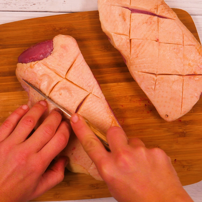
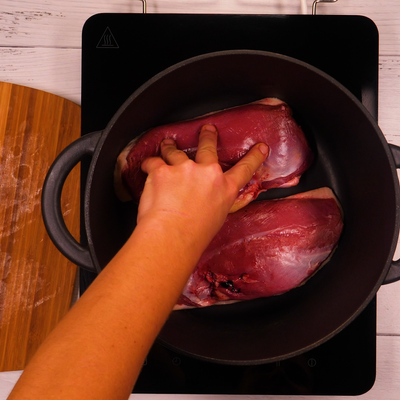
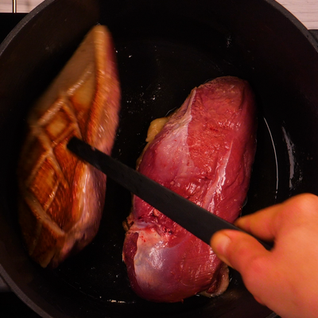
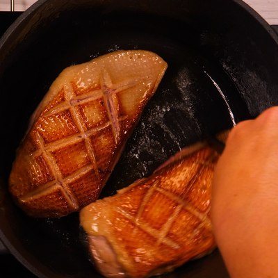
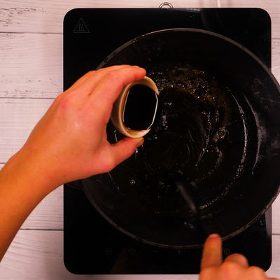
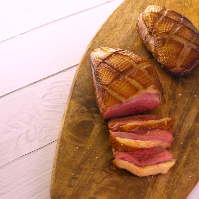
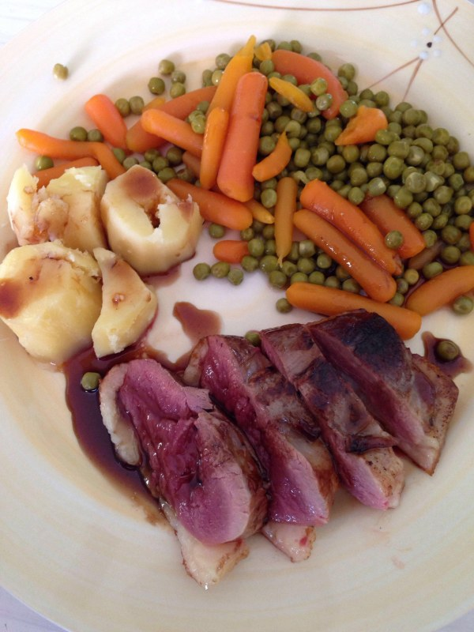

Le Magret au Miel
les Ingredients
- 2 Magret de canard gras
- 3 cuilleres a soupe de miel
- 3 cuilleres a cafe de vinaigre balsamique
- sel
Preparation
| Temps total |
20 min |
| Preparation |
10 min |
| Cuisson |
10 min |
- Inciser les magrets côté peau en quadrillage sans couper la viande.

- Cuire les magrets à feu vif dans une cocotte en fonte, en commençant par le coté peau.

- Le temps de cuisson dépend du fait qu'on aime la viande plus ou moins saignante.
Compter environ 5 min de chaque côté. Retirer régulièrement la graisse en cours de cuisson.

- Réserver les magrets au chaud (au four, couverts par une feuille d'aluminium)

- Déglacer la cocotte avec le miel et le vinaigre balsamique. Ne pas faire bouillir,
la préparation tournerait au caramel. Bien poivrer.

- Mettre en saucière accompagnant le magret coupé en tranches.

- Comme accompagnement, je suggère des petits navets glacés

Retour au Menus